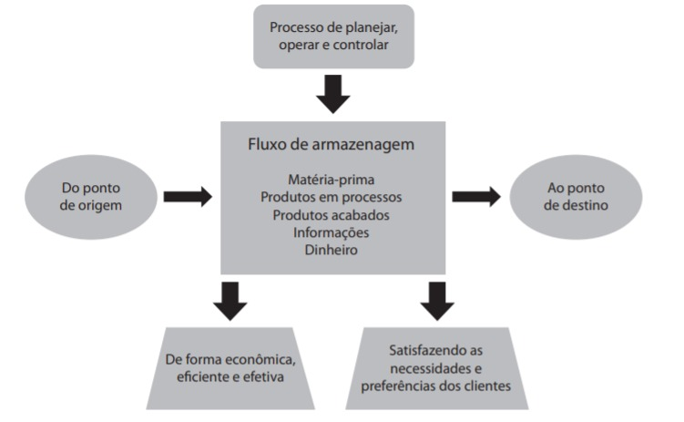

A logística é o processo de planejar, implementar e controlar de maneira eficiente o fluxo e a armazenagem de produtos, bem como os serviços e as informações associadas, cobrindo desde o ponto de origem até o ponto de consumo, com o objetivo de atender aos requisitos do consumidor, conforme mostrado na figura a seguir. A logística passou a ter papel fundamental no desempenho organizacional ao agregar valor de lugar, de tempo, de qualidade e de informação aos processos de uma empresa.

A partir dessas informações, avalie as afirmações a seguir.
I. Uma das mudanças ocorridas em relação à logística foi a visão de que ela deve ser considerada como fator estratégico para o sucesso da organização.
II. As decisões estratégicas devem ser tomadas em nível central e incluir monitoramento e controle do desempenho dos subcontratados, ao passo que o melhor gerenciamento do dia a dia com esses parceiros logísticos se realiza em nível local.
III. A grande competitividade no mercado e no ambiente externo às organizações requer que as empresas trabalhem com maiores níveis de estoque e com número reduzido de fornecedores.
IV. As mudanças e a grande competitividade no mercado fizeram com que o papel desempenhado pela logística contribua para o aumento da satisfação dos clientes.
A. I e IV.
B. II e III.
C. III e IV.
D. I, II e III.
E. I, II e IV.
Fonte: As questões desse simulado foram obtidas na prova disponibilizada no site do INEP - Instituto Nacional de Estudos e Pesquisas Educacionais Anísio Teixeira.
Créditos: Inep - Enade
Créditos de imagem: ENADE - Tecnologia em Logística, 2018.